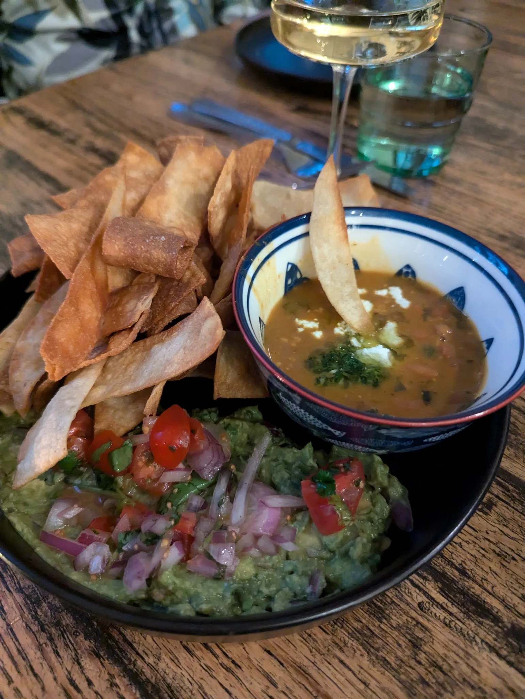

Visit
9 Market, Beaufort
In Habersham Marketplace, in the village of Habersham — about fifteen minutes from downtown Beaufort.
Hours
- SundayClosed
- MondayClosed
- Tuesday5:30 – 10pm
- Wednesday5:30 – 10pm
- Thursday5:30 – 10pm
- Friday5:30 – 10pm
- SaturdayLunch 12 – 4
Dinner 5:30 – 10pm
Address
Criollo
9 Market
Beaufort, SC 29906
Habersham Marketplace, in the village of Habersham.
Contact
Good to know
Reservations
Booked through Resy. Walk-ins are welcome at the bar when we have room.
Parking
Free parking around Habersham Marketplace.
Larger parties
For groups and private events, send us an inquiry or call.
Payment
Menu prices reflect the credit card price; a discount is available for cash.

While you're on the block
Bistro Ten is ten steps away
Our sister restaurant at 10B Market serves lunch Tuesday through Saturday and dinner Wednesday through Saturday, plus wine dinners, cooking classes and Sunday suppers.